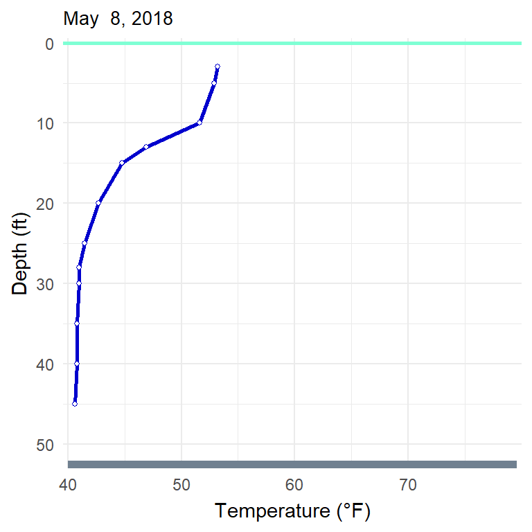

Introduction
The Pike Chain of Lakes near Iron River, WI is a set of nine connected lakes, seven of which have relatively consistent water quality data. The Pike Chain is highly developed, has several public access locations, and is popular among anglers, boaters, snowmobilers, etc. year-round. Over the years, especially recently since Eurasian watermilfoil was introduced, volunteers have recorded various water quality parameters for the Pike Chain of Lakes. Below I show the record of temperature by depth recordings that are publicly available through the Wisconsin DNR Citizen Lake Monitoring Network.
Temperature Profile Plot
A temperature profile plot shows the water temperature at various depths through the water column (Figure 1). Depth is shown with the water surface at the top and the lake bottom at the bottom of the left axis. Temperature increases from left to right on the bottom axis.
Figure 1 illustrates a typical mid-summer profile where the temperature is fairly and consistently warm near the surface (75-80oF from 0 to 15 ft) declines quickly over a fairly narrow depth range (drops from 75oF to 50oF from 15 to 30 ft) and then stays fairly and consistently cool at greater depths.
Seasonal Changes in Temperature Profile
In winter (under the ice in northern Wisconsin) and at ice-out the water temperature will be a nearly constant 39oF from top to bottom (perhaps a little cooler at the ice-water interface). However, as spring progresses the surface water becomes warmer and moving into summer that warmer water will extend deeper into the lake. However, in most lakes in our area there will be a depth where the water temperature begins to decline dramatically over a fairly narrow depth range (see Figure 1). Eventually there will be a depth where the water temperatures stays fairly and constantly cold below that depth. The transition zone of water temperatures quickly declining from warmer surface to cooler below-surface water is called the thermocline. As fall approaches the process is reversed such that the surface water will cool (and, thus, sink) until the water temperature is again fairly constant throughout the water column.
On Eagle Lake we do not have water column temperature data very near the ice-out and ice-in dates. Thus, the seasonal phenomenon just described cannot be fully illustrated for Eagle Lake. However, Figure 2 shows the general trend of warmer surface water, the thermocline, and cooler water at deeper depths through the open-water months. The warming and then cooling of the surface water layer is also evident in Figure 2.

The dissolution of the thermocline in late fall was more evident in the data from 2020, where the temperature was almost constant throughout the water column on the last observation date of October 16 (Figure 3).

Eagle Lake Temperature Profiles

Resources
- Lake Turnover at the Clean Lakes Alliance
- Vertical Mixing and Turnover at Britannica.com
- Temperature and Oxygen at North American Lake Management Society
- Dissolved Oxygen and Temperature at Michigan State U.
- Thermocline at BoatSafe.com